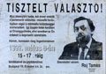
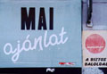

Torgyán elvtárs

Nicsak. Az SZDSZ már akkor is mennyit törõdött velünk.
Éljen a seriff!

Vajon mi köze az SZDSZ-nek a nevelési tanácsadóhoz?
Akkoriban még mindenki aktivista volt. Haj, szép idõk.
Gerillapropaganda anno
Lelkes demokráciahívõ volt a fél ország
Csécsei elvtárs remek szóvicce tán még Gesztit is meghátrálásra kényszerítené
A Munkáspárt már akkor is...
Népi demokráciánk legfõbb eredményeként a boltok kínálata egyre szélesebb lett
Bármily hihetetlen, ez a falfirka sem a mostani választások idején született
Éjszakánként a régi, 1945-bõl megmaradt lendülettel festegettük a jelszavakat a kerítésekre. Mész helyett persze már festékszóróval.
Megkezdõdtek az összefonódások
Igen. Vásárolj magyar árut!
És a házigazda magát kihúzva állt a ház elõtt, kezében az ecsettel, és büszkén szemlélte mûvét...
Ilyen is van. A tagság három-négy évente kicserélõdik.
A rendszerváltás káoszának egyik mellékterméke
Ez meg a másik melléktermék
Kár, hogy csak töredéke maradt meg ennek a remek plakátnak
Szegény patkány elment megnézni a Parlamentet, de a népítélet közel se engedte hozzá
Ugye, Demszky úr!
No comment
Az MDF piacra emlékszünk. Az SZDSZ állítólag az anyját is eladná. Vajon épp itt?
Vigyázzunk a nácikkal. Így néznek ki, és igen veszélyesek.
Az MDF megmagyarázza
Mehetne a szanalmas.hu-ra is
SZDSZ közeli cég
Kangalamb kapható
Kis pénz, kis önkormányzat
Emlékszik valaki Árpi bácsira egyáltalán?
Velõs vélemény

Kinek mi a jó
Vissza a természethez
Ez nem kisgazda ház
Logó
Akkor nem lett demokrácia. Tehát?
Bármily hihetetlen, az "MSZP-hívõ szocialisták" akkoriban külön szektát alkottak
Az épületben gépjármû-építõ tanfolyam zajlik
Teccikérteni?